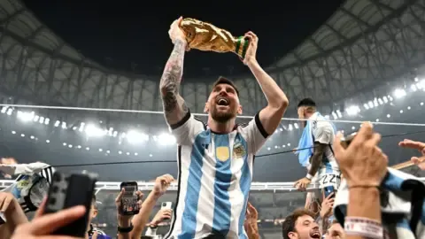
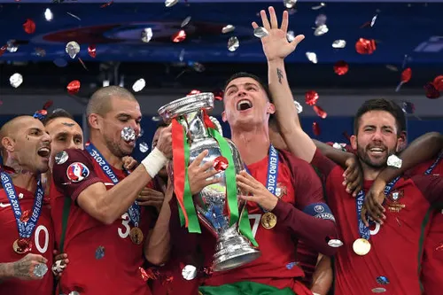

Latest Posts
Argentina has conquered the FIFA WORLD CUP 2022

"History is made in Qatar! Argentina are champions of the world again — for the third time! And this time… it’s Lionel Messi’s World Cup! The boy from Rosario, the little magician who carried the weight of a nation on his shoulders, has finally climbed football’s ultimate mountain. For years, the debate raged… but tonight, there is no debate. He is eternal. He is immortal. He is crowned at last — the greatest of all time!"
"From Maradona in 1986 to Messi in 2022… Argentina’s legacy is complete. Tears of joy, tears of relief — the dream has come true. The wait is over. Lionel Messi… has reached footballing immortality."
Portugal won Euro 2025

*"History in Paris! Portugal — against all odds, against every setback — are the champions of Europe!
Cristiano Ronaldo, the captain, the talisman, the man who was carried off in tears in the first half, now returns to the touchline in triumph, celebrating with his teammates!
Éder, the unlikely hero, with that thunderbolt in extra time, but this moment… this moment belongs to Portugal, and to Ronaldo!
For years he chased glory with his country, for years he was compared, doubted, questioned… but tonight, he is immortal. He has done it, he has lifted his nation to the summit of Europe!
The tears of pain have turned into tears of joy. Cristiano Ronaldo — European champion at last!"*